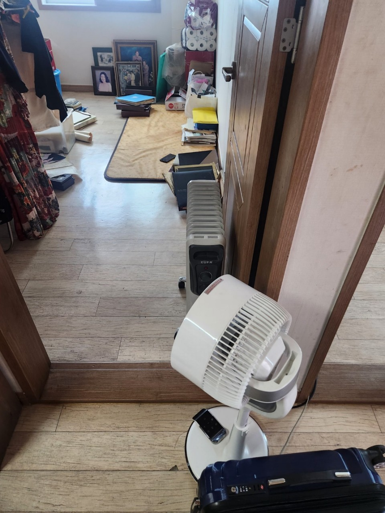
강남구 · 아파트
대단지 아파트 유품정리
보관할 물품 기준을 먼저 정한 뒤 서류와 사진, 귀중품을 확인하고 생활용품과 폐기물을 구분해 정리했습니다.
서울 25개 구 현장 상황에 맞춰 유품 분류와 중요 물품 확인, 폐기물 처리, 공간 정돈까지 안내드립니다.
보관품, 확인품, 폐기품을 구분하며 가족과 협의해 정리합니다.
강남·송파·강서·마포·노원 등 서울 25개 구 상담 가능합니다.
일반 유품정리부터 고독사청소, 특수청소까지 현장에 맞춰 안내합니다.
유품 분류, 중요물품 확인, 폐기물 정리, 공간 정돈까지 상황에 맞춰 진행합니다.
의류, 생활용품, 서류, 사진, 귀중품 등을 가족과 협의해 분류하고 정리합니다.
오염 범위 확인 후 위생 정리와 특수청소가 필요한 공간을 조심스럽게 처리합니다.
악취, 오염, 장기간 방치된 공간 등 일반 정리로 어려운 현장을 정리합니다.
정리 과정에서 발생한 가구, 생활폐기물, 잔짐을 현장 조건에 맞춰 처리합니다.
표시 금액은 기본 안내 금액이며, 정확한 비용은 현장 확인 후 작업 범위에 따라 안내드립니다.
중요 물품 확인, 생활용품 분류, 폐기물 분류, 공간 정리 상담
오염 범위 확인, 악취·위생 문제, 특수청소 필요 여부에 따라 안내
1톤 1대 기준. 폐기물 양, 운반 거리, 층수에 따라 변동 가능
아파트, 빌라, 오피스텔, 주택 등 주거 형태와 현장 조건에 따라 작업 범위와 비용이 달라질 수 있습니다.
보관품과 폐기품의 양이 많을수록 작업 시간과 인력이 달라집니다.
엘리베이터 여부, 주차 위치, 운반 동선에 따라 작업 난이도가 달라집니다.
가구, 가전, 생활폐기물의 양과 종류에 따라 처리 비용이 달라질 수 있습니다.
오염, 악취, 장기간 방치가 있는 경우 추가 작업이 필요할 수 있습니다.
공간 규모와 희망 일정에 따라 투입 인원과 차량 수가 달라질 수 있습니다.
당일 상담이나 급한 일정은 현장 위치와 예약 상황에 따라 안내드립니다.
서울 유품정리는 단순히 집 안의 물건을 치우는 일이 아닙니다. 고인의 생활 흔적이 남아 있는 공간에서 중요한 물품을 확인하고, 가족이 보관할 물건과 정리할 물건을 구분하는 과정이 먼저 필요합니다.
강남·송파·마포·노원 등 서울 25개 구는 아파트, 오피스텔, 빌라, 단독주택, 원룸 등 주거 형태가 다양합니다. 같은 서울 지역이라도 현장 구조, 엘리베이터 여부, 폐기물 반출 동선, 관리 규정에 따라 작업 방식과 시간이 달라질 수 있습니다.
장기간 방치된 공간이나 냄새, 오염이 남아 있는 현장은 일반 유품정리만으로 마무리되지 않을 수 있습니다. 이런 경우 현장 상태를 확인한 뒤 소독, 탈취, 특수청소 범위를 함께 안내합니다.
주소, 주거 형태, 층수, 엘리베이터 유무, 정리할 물품의 대략적인 양, 보관해야 할 물품 여부를 미리 알려주시면 상담이 더 정확해집니다. 사진을 보내주시면 방문 전 대략적인 작업 범위 안내가 가능합니다.
처음 상담부터 마무리 확인까지 가족과 협의하며 단계별로 진행합니다.
주소, 공간 형태, 정리 범위, 희망 일정을 확인합니다.
물품 양, 층수, 엘리베이터 여부를 확인합니다.
서류, 통장, 사진, 귀중품 등을 분류합니다.
보관품, 확인품, 폐기품을 구분합니다.
정리 후 공간 상태를 확인합니다.
작업 전·중·후 사진을 구분해 현장 정리 흐름을 확인할 수 있도록 구성했습니다.


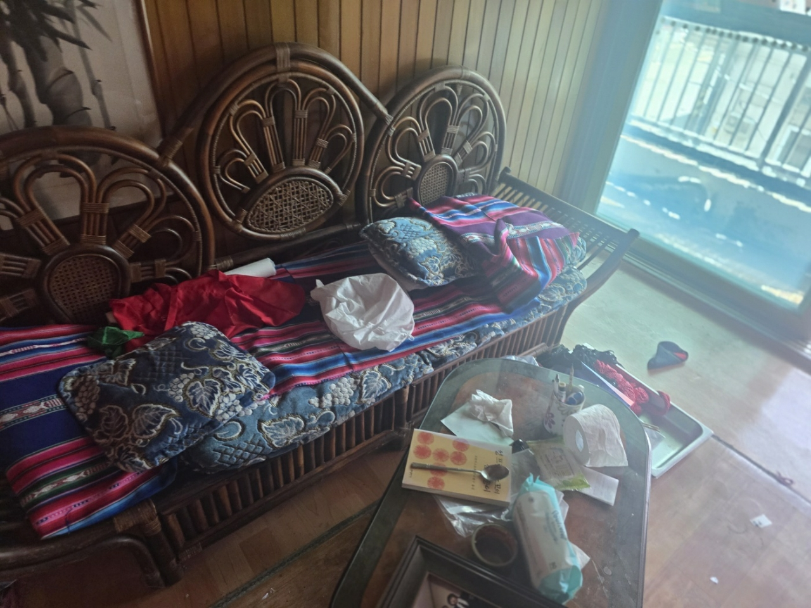
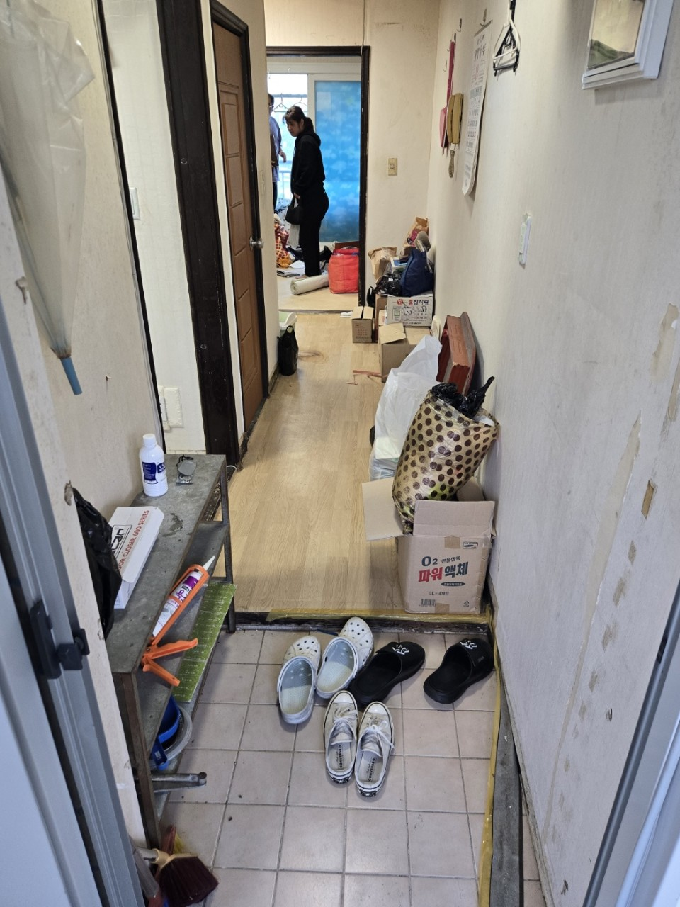

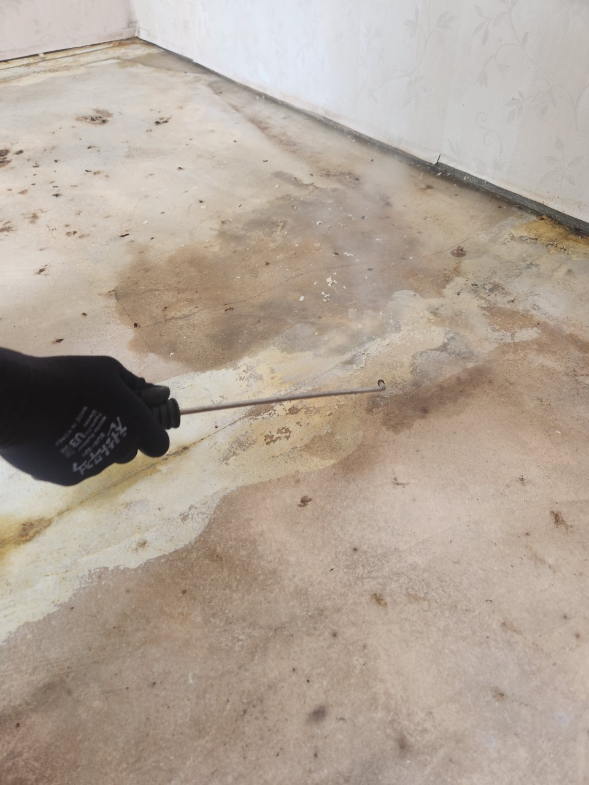
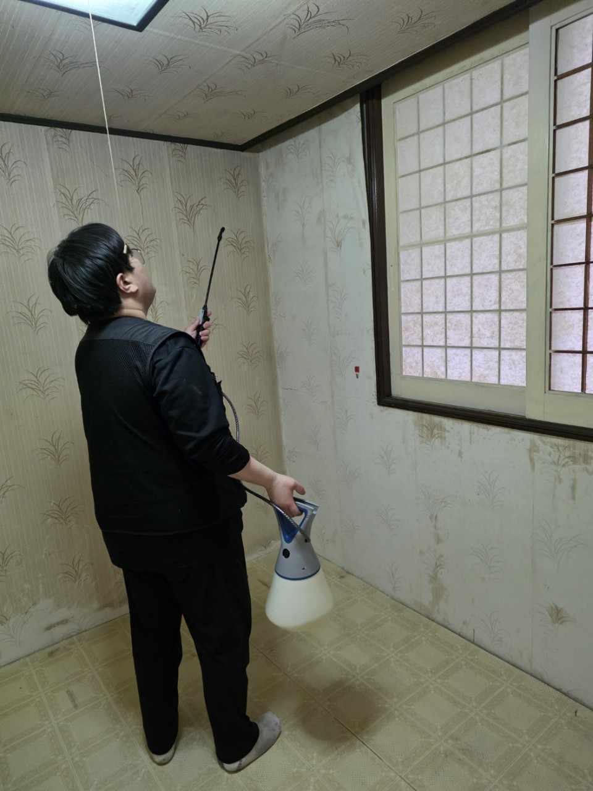
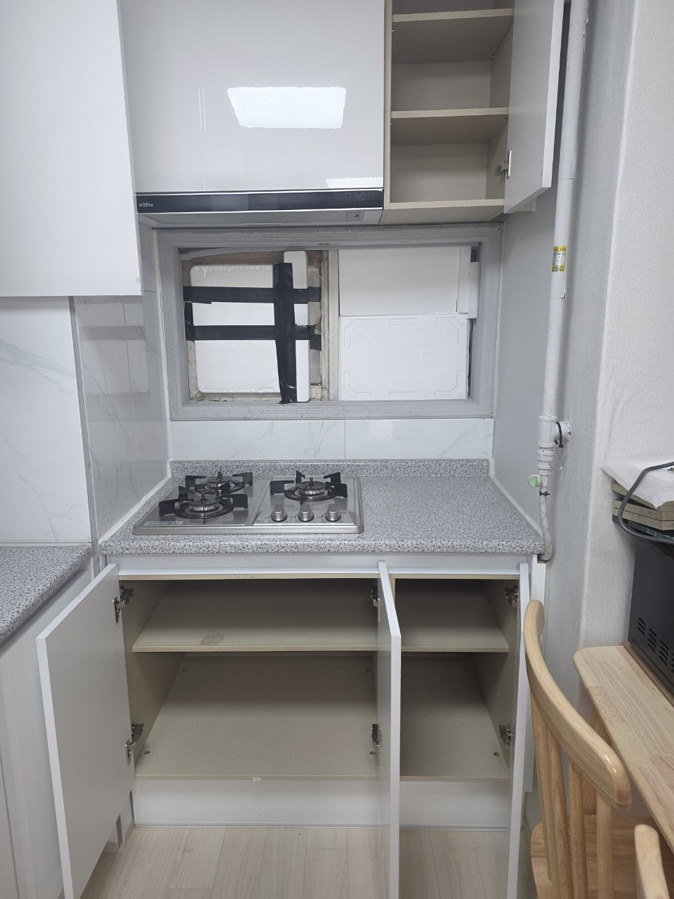
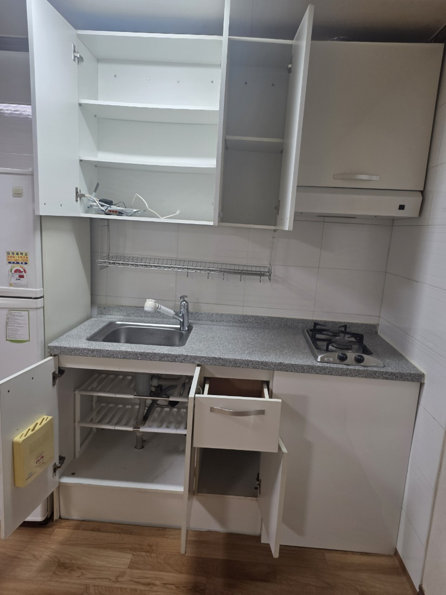
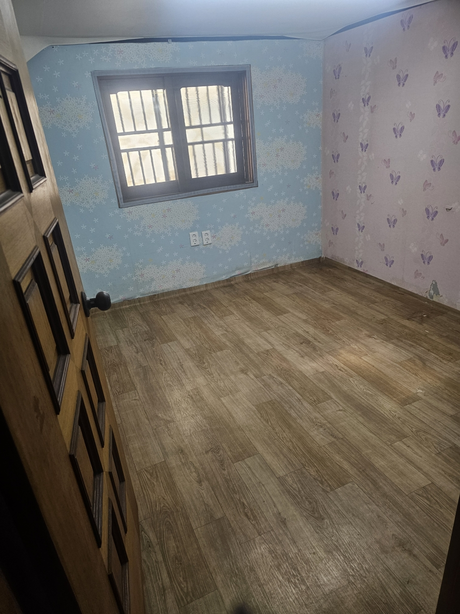
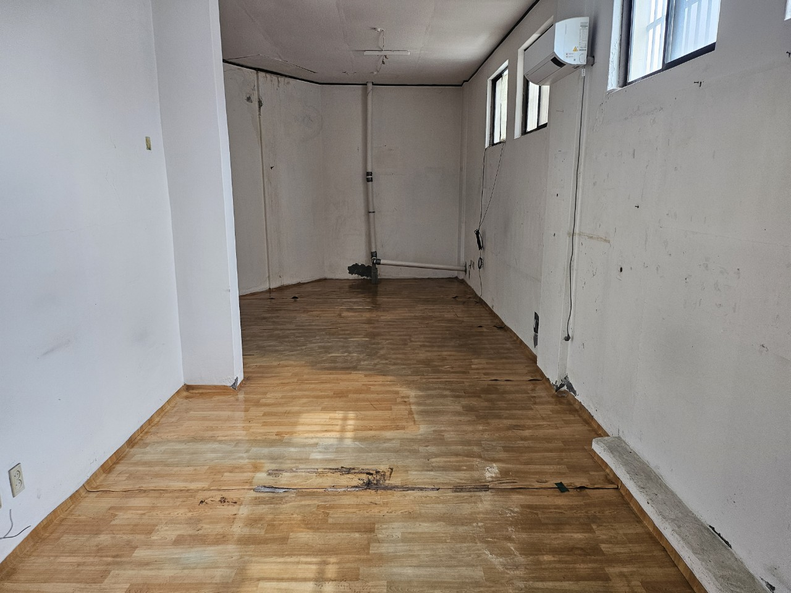
서울 각 지역에서 진행된 유품정리 현장 유형별 사례입니다.

보관할 물품 기준을 먼저 정한 뒤 서류와 사진, 귀중품을 확인하고 생활용품과 폐기물을 구분해 정리했습니다.
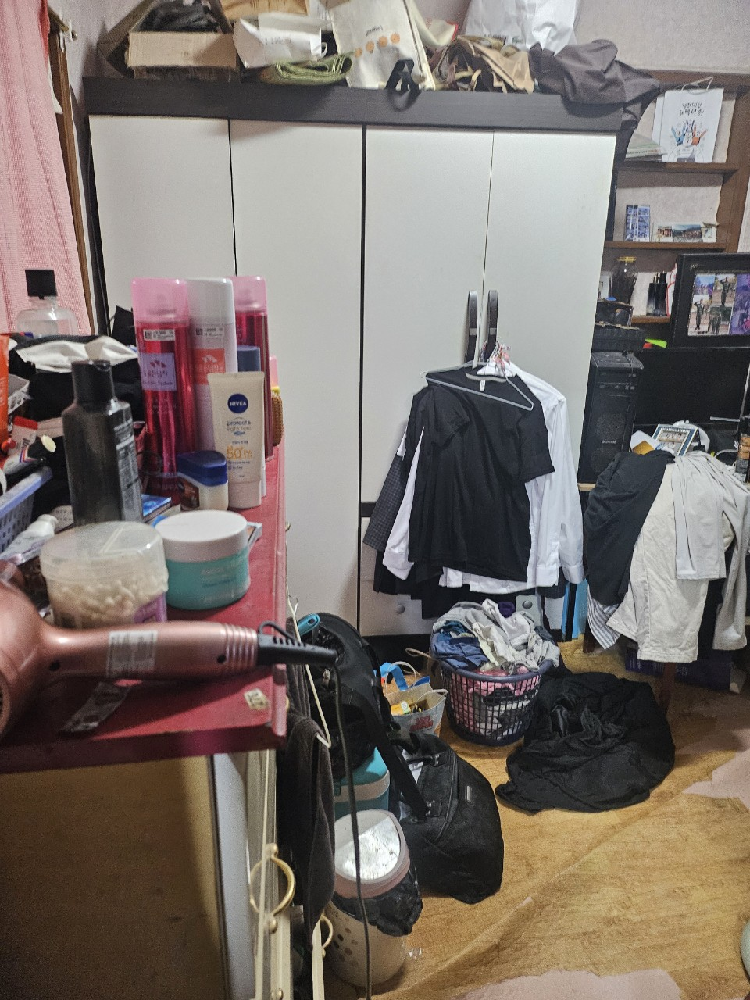
층수와 운반 동선을 확인한 뒤 가구와 생활폐기물을 분리하고, 마무리 단계에서 공간 상태를 다시 확인했습니다.
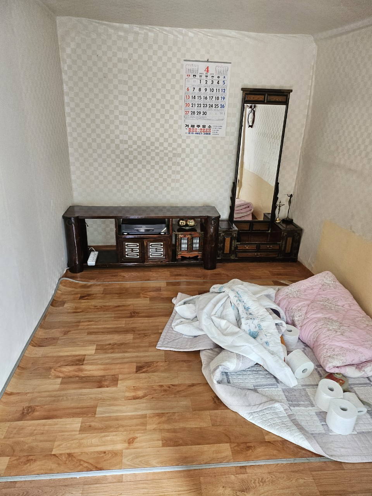
오염 범위와 악취 여부를 확인한 뒤 특수청소 필요 범위를 안내하고, 유품 분류와 폐기물 처리를 함께 진행했습니다.
서울 각 지역에서 진행된 유품정리 상담과 작업 후기입니다.
중요 물품 기준을 먼저 정해 주셔서 가족과 상의하기 편했습니다. 정리 후 공간도 깔끔해졌습니다.
강남구 고객님물품이 많아 막막했는데 보관품과 폐기품을 구분해 주셔서 부담이 많이 줄었습니다.
송파구 고객님고독사청소가 필요한 상황이었는데 설명을 차근차근 해 주셔서 안심하고 맡길 수 있었습니다.
영등포구 고객님서류와 사진, 귀중품을 따로 확인해 주셔서 큰 도움이 됐습니다. 일정 조율도 유연했습니다.
마포구 고객님폐기물처리까지 함께 상담할 수 있어서 한 번에 정리가 끝났습니다. 비용 안내도 명확했습니다.
강서구 고객님엘리베이터 사용이 어려운 현장이었는데 작업 순서를 잘 잡아 주셔서 무사히 마쳤습니다.
노원구 고객님예약 상황과 현장 위치에 따라 당일 상담 또는 빠른 일정 조율이 가능합니다.
가능합니다. 오염 범위와 악취, 소독 및 특수청소 필요 여부를 확인한 뒤 안내드립니다.
가능합니다. 유품정리 과정에서 발생하는 생활폐기물과 가구, 잔짐까지 함께 상담 가능합니다.
중요 물품 기준을 정하기 위해 초기 상담 단계에서는 가족분과 협의하는 것이 좋습니다.
통장, 도장, 계약서, 사진, 귀금속 등은 별도로 확인해 가족분께 안내드립니다.
현장 상황과 주소를 남겨주시면 방문 가능 일정과 정리 범위를 확인해 안내드립니다.
서울·경기 지역 유품정리와 폐기물처리 상담 사이트입니다.
유품정리 · 고독사청소 · 특수청소 · 폐기물처리 상담